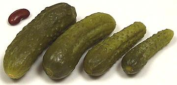

Gherkin - Cucumber

[Cornichon (French), Cucumis sativa]
Any tiny immature cucumber used for pickling, generally less than three
inches long. Since few people have ever seen a
True Gherkin this naming has been a
successful subtrifuge.
India has become a major grower and pickler of these cucumbers taking
advantage of low labor rates but this industry is ecologically
questionable and there have been contract abuses as well. The photo
specimens are from Bulgaria with the largest measuring 2-7/8 inch long,
7/8 inch diameter and weighing 5/8 ounce.
More on Cucumbers.
Buying:
Not much to say here, they come in jars and are
found in most supermarkets. Generally, the smaller they are the more
expensive, and if they are really tiny, come from France and are called
Cornichons they are very expensive. Those from Bulgaria are quite good,
economical and come in various sizes.
Storing:
Unopened jars will keep a good year in a cool
dark location. Once opened they should be refrigerated (up to a month) or
consumed within a couple days or flavor will suffer.
ck_cgherk 071005 - www.clovegarden.com
©Andrew Grygus - agryg@clovegarden.com - Photos
on this page not otherwise credited © cg1
- Linking to and non-commercial use of this page permitted